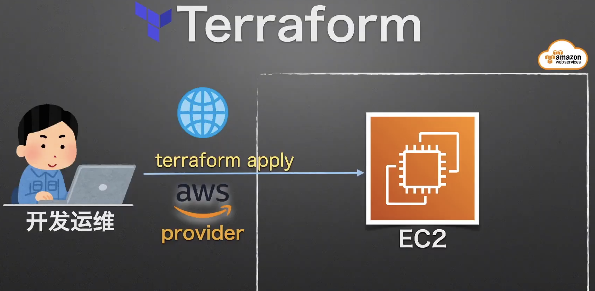

快速建立第一个 EC2 实例 - 本地授权方式
知识点
- 使用 Terraform 快速建立第一个 EC2 实例
官网
https://registry.terraform.io/
- Terraform Registry是Terraform的注册机，相当于java的maven、Nodejs的NPMjs，这里集成了所以Terraform的中间件，主要分为两个类型：
- Providers：提供器，几乎是官方维护。例如要建立AWS基于Terraform的平台，就需要AWS的提供器来支持后端的云平台。
- Modules：模块，几乎是个人或组织维护。有了上面很多的提供器，想高效的使用就需要用到模块。
实战演习/说明讲解

- 建立本地 Terraform 文件, (简称 tf 文件)
- 遵循 Terraform 工作流程完成资源部署 - init、validate、plan、apply、destroy
- 动作确认
操作步骤
建立本地 Terraform 文件, (简称 tf 文件)
$ mkdir awstf
$ cd awstf
$ vim main.tf
main.tf
###########################################################
# Terraform 基本设置
terraform {
# 声明provider
required_providers {
# https://registry.terraform.io/browse/providers
aws = {
source = "hashicorp/aws"
version = "~> 3.74"
}
}
# 声明Terraform版本
required_version = ">= 1.1.4"
}
###########################################################
# 提供商设置(云平台)
# 描述AWS Provider
# https://registry.terraform.io/providers/hashicorp/aws/latest
provider "aws" {
# ~/.aws/credentials文件的[name]
profile = "learnaws"
region = "ap-northeast-1"
}
###########################################################
# 描述要生成的资源设置
# https://registry.terraform.io/providers/hashicorp/aws/latest/docs/resources/ami
# https://registry.terraform.io/providers/hashicorp/aws/latest/docs/resources/instance
resource "aws_instance" "myweb_server" {
ami = "ami-0218d08a1f9dac831"
instance_type = "t3.micro"
tags = {
Name = "learnaws-ec2-from-terraform"
}
}
遵循 Terraform 工作流程完成资源部署
# 目录初始化（会现在必要的安装包和provider）
$ terraform init
# 确认提供商管理文件, 该文件记录具体的提供商版本信息, 应该包含到源代码信息库中
$ ls -a
$ cat .terraform.lock.hcl
# 检验 tf 文件
$ terraform validate
# 实施计划, 准备资源
$ terraform plan
...
>Plan: 1 to add, 0 to change, 0 to destroy.
# 应用部署
$ terraform apply
...
>Apply complete! Resources: 1 added, 0 changed, 0 destroyed.
# 摧毁系统，即把当前tf脚本描述的所有资源全部摧毁
$ terraform destroy
...
>Destroy complete! Resources: 1 destroyed.
动作确认
Done.